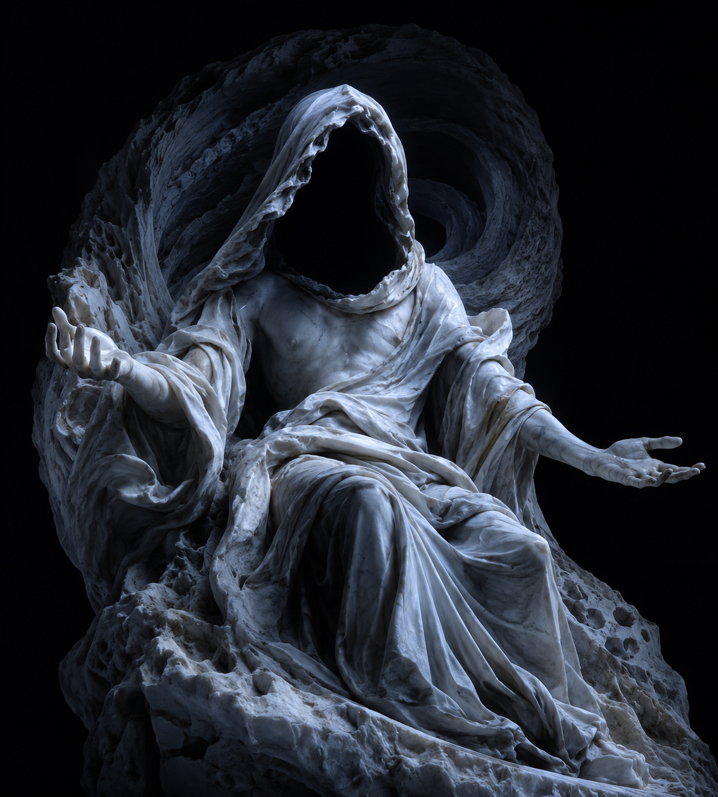

Chaos
Χάος. The Yawning Void
Primordial. The First ExistenceBefore all things, Chaos was. not disorder, but the primordial void, the gap of infinite dark potential from which all existence emerged. Neither male nor female, neither god nor substance, Chaos is the condition that makes creation possible. From its depths arose Gaia, Tartarus, Erebus, Nyx, and Eros. the five primordial forces that would generate all that followed.